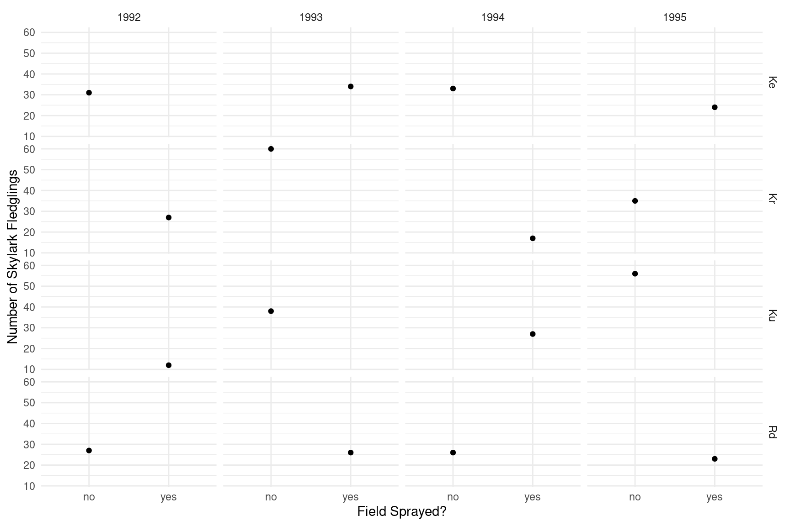
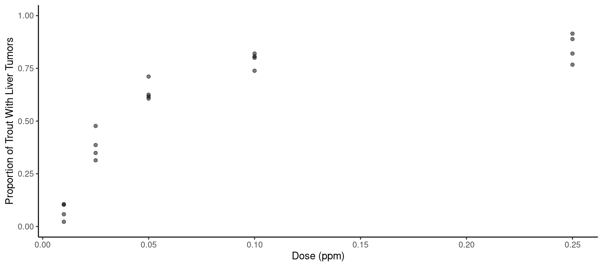

You can also download a PDF copy of this lecture.
During the four summers from 1992 to 1995 researchers from the
National Environmental Research Institute in the Ministry of Environment
and Energy in Denmark conducted a study to examine how pesticide use
impacts skylark reproduction in barley fields.1 The study used a
fractional factorial design in which each year two of four fields were
sprayed with pesticides while the other two fields were not.2 Which
fields were sprayed was alternated so that a field was sprayed every
other year. The number of fledgling skylarks produced in each field each
year was recorded. The data are in the skylark data frame
from the trtools package. The data are plotted
below.
library(trtools)
library(ggplot2)
p <- ggplot(skylark, aes(x = spray, y = count)) +
geom_point() + facet_grid(field ~ year) +
labs(shape = "Field", x = "Field Sprayed?",
y = "Number of Skylark Fledglings") + theme_minimal()
plot(p) The plot clearly shows the incomplete nature of the fractional factorial design. In any given year, a field either was or was not sprayed. The objective is to investigate the effect of spraying on the number of skylarks while controlling for the effects of year and field.
Estimate a Poisson regression model for the number of skylark fledglings as your response variable that will reproduce the following results.
cbind(summary(m)$coefficients, confint(m)) Estimate Std. Error z value Pr(>|z|) 2.5 % 97.5 %
(Intercept) 3.430943 0.13262 25.86999 1.450e-147 3.16352 3.68367
sprayyes -0.456126 0.09385 -4.86011 1.173e-06 -0.64141 -0.27324
fieldKr 0.049089 0.12672 0.38738 6.985e-01 -0.19929 0.29806
fieldKu 0.004964 0.12800 0.03879 9.691e-01 -0.24611 0.25625
fieldRd -0.179048 0.13417 -1.33452 1.820e-01 -0.44342 0.08326
year1993 0.462623 0.13064 3.54108 3.985e-04 0.20868 0.72149
year1994 0.060018 0.14149 0.42420 6.714e-01 -0.21735 0.33816
year1995 0.327281 0.13411 2.44041 1.467e-02 0.06596 0.59240Note that here m is a model object created using the
glm function.
According to the model, the expected number of skylark fledglings when a field is sprayed is about 0.63 times that when a field is not sprayed. In other words, we estimate when the fields are sprayed the expected number of skylark fledglings by about 37 percent lower. Note that these effects are qualified as “when controlling for field and year” or “for any given field or year” since the model conditions the distribution of counts on these variables as well. Confirm this result by applying the exponential function to the parameter estimates.
Replicate the result that was obtained in the previous problem
using the contrast function and the tf = exp
option. Note that you will need to specify a field and a year, but since
the model does not contain any interactions between spray and those
variables the multiplicative effect of spray will not depend on the
field or year you specify.
Use contrast to estimate the expected number of
fledglings with and without spraying for any given field or
year.
The data in the data frame ex2116 in the
Sleuth3 package are from an experiment that
investigated the relationship between aflatoxicol and liver tumors in
trout. The figure below shows the proportion of trout in each tank that
developed liver tumors as well as the dose of aflatoxicol to which the
trout were exposed. Aflatoxicol is a metabolite of Aflatoxin B1, a toxic
by-product produced by a mold that infects some nuts and grains. Twenty
tanks of rainbow trout embryos were exposed to one of five doses of
aflatoxicol for one hour. The number of fish in each tank that developed
liver tumors one year later was then observed. The plot below shows the
data.
library(Sleuth3)
library(ggplot2)
p <- ggplot(ex2116, aes(x = Dose, y = Tumor/Total)) +
geom_point(alpha = 0.5) + theme_classic() + ylim(0, 1) +
labs(x = "Dose (ppm)", y = "Proportion of Trout With Liver Tumors")
plot(p) The goal here is to estimate the effect of aflatoxicol on the risk of liver tumors in trout. Here we will consider three different logistic regression models.
Consider the logistic regression model \[
\log\left[\frac{E(Y_i)}{1-E(Y_i)}\right] = \beta_0 + \beta_1 d_i,
\] where \(Y_i\) is the \(i\)-th observation of the proportion of
trout from a tank that developed liver tumors and \(d_i\) is the corresponding dose of
aflatoxicol to which those trout were exposed. This model can also be
written as \[
E(Y_i) = \frac{e^{\eta_i}}{1 + e^{\eta_i}},
\] where \(\eta_i = \beta_0 + \beta_1
d_i\). Note that by definition \(E(Y_i)\) is also the probability
that a trout from a given tank will develop liver tumors, and \(E(Y_i)/[1-E(Y_i)]\) is the odds
that a trout from a given tank will develop liver tumors. Estimate this
model using glm. You should be able to replicate the
following results.
cbind(summary(m)$coefficients, confint(m)) Estimate Std. Error z value Pr(>|z|) 2.5 % 97.5 %
(Intercept) -0.867 0.07673 -11.3 1.321e-29 -1.019 -0.7179
Dose 14.334 0.93695 15.3 7.838e-53 12.558 16.2346Next estimate the odds ratio for the effect of increasing dose by
0.05 ppm using the contrast function.3 Remember to use the
tf = exp option. You should find that increasing dose by
0.05 ppm is estimated to increase the odds of tumor development by a
factor of about 2.05 (i.e., approximately a 105% increase in the odds of
tumor development). That is the odds ratio for the effect of increasing
dose by 0.05 ppm.
Now consider a model where we use the base-2 logarithm of dose as
the explanatory variable so that \[\eta_i =
\beta_0 + \beta_1 \log_2(d_i).\] Recall that the function \(\log_2\) is known to R as
log2. Estimate this model using glm. You
should be able to replicate the following results.
cbind(summary(m)$coefficients, confint(m)) Estimate Std. Error z value Pr(>|z|) 2.5 % 97.5 %
(Intercept) 4.1634 0.2085 19.97 9.564e-89 3.7631 4.581
log2(Dose) 0.8997 0.0446 20.17 1.628e-90 0.8141 0.989Here increasing the base-2 logarithm of dose by one unit is the same thing as doubling dose, and so the effect on the odds ratio of doubling dose will be the same regardless of what you double (e.g., 0.05 to 1 ppm, 0.1 to 0.2 ppm, etc.).4 Confirm that the odds ratio for the effect of doubling dose is approximately 2.46, which is approximately a 146% increase in the odds of tumor development. That is, doubling dose will increase the odds of tumor development by a factor of about 2.46. Also confirm that these odds ratios do not depend on the base of the logarithm by trying the natural logarithm with the model \(\eta_i = \beta_0 + \beta_1 \log(d_i)\).
Rather than trying to decide between using dose or some transformation of dose in the model, we can instead define dose as a 5-level factor. There are two ways we could specify dose as a factor. One would be to create a new variable.
ex2116$Dosef <- factor(ex2116$Dose)The levels of Dosef will be the original values of
Dose but converted to strings, which we can see if we use
the levels function.
levels(ex2116$Dosef)[1] "0.01" "0.025" "0.05" "0.1" "0.25" Another approach is to replace Dose in the model formula
with factor(Dose). Use the contrast function
to estimate the odds ratio for the odds of tumor development at 0.025
ppm versus 0.01 ppm, 0.05 ppm versus 0.01 ppm, 0.1 ppm versus 0.01 ppm,
and 0.25 ppm versus 0.01 ppm.5 You should find that these odds ratios are
approximately 7.94, 22.92, 48.91, and 70.84. Thus, for example, at a
dose of 0.025 ppm the odds of tumor development is about 7.94 times
higher than it is at a dose of 0.01 ppm (i.e., about 694%
higher).
Use contrast to estimate the odds and probability of
tumor development at each value of dose used in the study for any of the
three models.
Odderskær, P., Prang, A., Eknegaard, N., & Andersen, P. N. (1997). Skylark reproduction in pesticide treated fields (Comparative studies of Alauda arvensis breeding performance in sprayed and unsprayed barley fields). Bekæmpelsesmiddelforskning fra Miljøstyrelsennr, 32, National Environmental Research Institute, Ministry of the Environment and Energy, Denmark: Danish Environmental Protection Agency.↩︎
A fractional factorial design is a design in which observations are made at only a subset of the possible combinations of levels of two or more factors. Such designs are quite economical but can preclude the estimation of interactions. This does not mean that such interactions are not present, but rather that if they are they are confounded with the main effects. For this particular design it is only possible to fully estimate a model with “main effects” for each of the three factors. Ideally factional factorial designs are used when interactions are negligible.↩︎
Here \(e^{\beta_1}\)
would be the odds ratio for the effect of increasing dose by 1 ppm.
However that is probably not a realistic effect as it would be a
relatively large increase in dose. The study only considered up to 0.25
ppm. Using contrast is convenient here to estimate the odds
ratio for the effect of an arbitrary change in dose.↩︎
We do not have to use the odds ratio for the effect of doubling dose just because we are using the base-2 logarithm of dose as our explanatory variable. We could also estimate the odds ratio for the effect of increasing dose from, say, 0.05 ppm to 0.1 ppm. But we would need to remember that because we are using the base-2 logarithm of dose as an explanatory variable that this would not be the same odds ratio as increasing dose the same amount from, say, 0.1 ppm to 0.15 ppm. Similarly for the previous model where we did not use the base-2 logarithm of dose, we could still estimate the odds ratio for the effect of doubling dose. But here we would need to remember that the odds ratio of doubling from, say, 0.05 ppm to 0.1 ppm would not be the same as the odds ratio for doubling from 0.1 ppm to 0.2 ppm.↩︎
Note that how you specify the levels of dose will depend
on whether you created a new variable like Dosef or
converted it to a factor within the model formula with
factor(Dose). For the latter you will need to specify dose
as a number but if you created it to a new variable you will
need to specify it as a string by enclosing it in quotes.↩︎